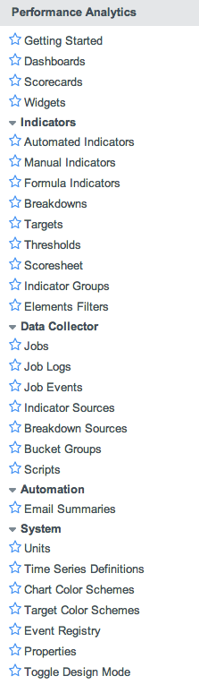

Performance Analytics
| |
Note: This article applies to Fuji and earlier releases. For more current information, see Performance Analytics at http://docs.servicenow.com
The ServiceNow Wiki is no longer being updated. Visit http://docs.servicenow.com for the latest product documentation. |
Contents
1 Overview
Performance management is a process by which organizations align their resources, systems, and employees to strategic objectives and priorities.
The single system of record approach within the ServiceNow platform allows you to measure and drive performance faster, easier and more engagingly within and across all service request management processes. Provide time-based perspectives of relevant data and focus on trend anomalies to prompt action.
With Performance Analytics, companies can:
- Drive performance: Provide actionable insight on each level and for every role using key indicators, mobile-enabled scorecards, time charts, analytics, drill-downs, and dashboards.
- Establish a single version of truth: Share clear, up-to-date visualizations of performance across teams and organizations, establishing a single version of truth as the basis for objectively discussing service delivery and driving behavioral change.
- Realize fast time-to-value: Implement business intelligence within the base ServiceNow system within days, instead of months, and make better use of the time and money that currently go into labor-intensive manual reporting.
Managing business performance facilitates the effective delivery of strategic and operational goals. There is a clear and immediate correlation between using performance management applications and improved business and organizational results. Performance management can yield a range of direct and indirect benefits, operational efficiency benefits, and by unlocking the latent potential in every employee's workday. That is, to help employees focus on work activities that really matter.
Benefits of using performance management may include:
- Align the organization with company goals.
- Decrease time required to create strategic or operational changes by communicating the changes through a new set of goals.
- Increase overall quality of services.
- Lower cost of services.
- Improve availability of services.
| |
Note: For customers using releases prior to Eureka, see Performance Analytics - Versions Prior to Eureka. |
2 Supported Web Browsers
ServiceNow supports Performance Analytics in UI14 and UI15. All browsers supported by these interfaces are supported by Performance Analytics. See Browser Support for a detailed list of supported browsers.
| |
Note: Performance Analytics no longer supports UI11. Most Performance Analytics functionality works in UI11, however some visualizations may not appear properly in this UI. |
3 Video Tutorials
Learn how ServiceNow Performance Analytics can help you drive Service Management within your enterprise to new levels of excellence with the following video playlist.
| ServiceNow Performance Analytics Tutorials |
|---|
4 Concepts
- Indicators: also known as metrics, business metrics, or KPIs, are a type of performance measurement, used by businesses to measure current conditions and to forecast business trends. Indicators are commonly used to evaluate success or the success of a particular activity. Success may be defined as making progress toward strategic goals, or as the repeated achievement of some level of operational goal (for example, zero defects, or 10/10 customer satisfaction). Choosing the right indicator requires a good understanding of what is important to a department in the organization - for example, the KPIs important to finance are quite different from the KPIs important to sales. To help develop this understanding of importance, indicator selection is often closely associated with techniques to assess the present state of the business, and its key activities. These assessments help identify potential improvement areas; so KPIs are usually associated with performance improvement initiatives. Indicator scores are usually presented in graphs to make them easier to read and understand.
- Breakdowns: also known as dimensions or drill-downs, these divide data in different ways. For example, incidents can be divided by priority or by assignment group. In Performance Analytics, data can be subdivided two levels deep for further analysis. A first-level breakdown could be by priority, for example grouping all Critical incidents. In this example, a second-level breakdown could be by assignment group, subdividing Critical incidents into, for example, Service Desk, Database, CAB, and so on. The breakdowns can also be turned around; for example, first by assignment group and then by priority, creating a so-called breakdown matrix.
- Scorecards: a graphical visualization of the scores of an indicator. The basic feel and look of a scorecard can not be changed. Scorecards can be enhanced by adding targets, thresholds, trendlines, and useful comments for significant changes. In a scorecard the scores of an indicator can be analyzed further by viewing the scores by breakdowns (scores per group), aggregates (counts, sums, and maximums), time series (totals and averages applied to different time periods) and drilling down to the records on which the scores are based.
- Dashboards: a dashboard can have multiple tabs and each tab can hold one or more widgets. A dashboard tab is actually a homepage. Thus a dashboard can hold all kinds of content blocks, not only Performance Analytics widgets. And any homepage can hold widgets. A user can have one or more dashboards assigned for viewing. Only users with the pa_admin and pa_power_user roles can edit dashboards.
- Widgets: determine how data is presented on dashboards. Widget configurations are used to view, set up, edit, and manage properties for dashboards and visualization types: time series, scores, lists, and breakdowns. For example, as a chart, latest score, speedometer, dial, scorecard, or column. Many variations are possible. Widgets are only visible when added to a dashboard.
- Data Collector: the engine that collects scores from your database on a regular basis by running jobs.
5 Roles
Performance Analytics uses the following roles:
| Role Title [Name] | Description |
|---|---|
| Performance Analytics Administrator [pa_admin] | An administrator can create new indicators, formulas, thresholds, and targets. An administrator can also add breakdowns, apply aggregates, create and edit dashboards, and change system configuration files, such as colors and layout.
The pa_admin role also includes the pa_data_collector role. |
| Performance Analytics Power User [pa_power_user] | A power user can do the same as an administrator, except change system configuration files and alter the data collection jobs. Typically a power user creates dashboards, rolls out new formula-based indicators, and requests modifications to the data collection layer. |
| Performance Analytics Contributor [pa_contributor] | A contributor can view dashboards and scorecards, and add, edit or delete scores of manual indicators for which the user, that has the contributor role, has been assigned as the contributor. |
| Performance Analytics Target Administrator [pa_target_admin] | A target administrator can add target values for any indicator. This role does not give access to dashboards and scorecards. So when giving a user this role, make sure to combine this with a role that gives access to dashboards and scorecards, for instance the viewer role. Available starting with the Fuji release. |
| Performance Analytics Threshold Administrator [pa_threshold_admin] | A threshold administrator can add thresholds for any indicator. This role does also not give access to dashboards and scorecards. So when giving a user this role, make sure to combine this with a role that gives access to dashboards and scorecards, for instance the viewer role. Available starting with the Fuji release. |
| Performance Analytics Viewer [pa_viewer] | A viewer has view-only access to one or more dashboards and scorecards based on the assigned rights. Viewers can be restricted to see data of their own department, team, or country only. |
| Performance Analytics Data Collector [pa_data_collector] | A data collector can create and edit data collection jobs and job events, and view job logs. Data collectors can also define and edit indicator sources, breakdown sources, bucket groups, and scripts. Data collectors can not access the Access Control section in the breakdown form and Elements Security List sections in the breakdown source form. The data collector role does not have access to dashboards and scorecards. So when giving a user the data collector role consider to give that user also the viewer role. |
6 Menus and Modules
Performance Analytics contains the following modules:
|  |
|
{kind=link}
7 Activating Performance Analytics
7.1 Performance Analytics for Incident Management
Performance Analytics for Incident Management is a complimentary version of Performance Analytics that is included in the base system, with some predefined indicators and breakdowns, some limited visualizations, and the ability to make some limited changes to these elements.
Performance Analytics for Incident Management is automatically enabled for new instances.
7.2 Upgrading to Performance Analytics Premium
For unlimited access to all Performance Analytics features, you can subscribe to the premium version of Performance Analytics. Performance Analytics Premium also allows you to use the predefined content packs.
To purchase a subscription, contact your ServiceNow account manager. The account manager will arrange to have the plugin activated on your organization's instance, generally within a few days.
If you do not have an account manager or want to evaluate the product on a sub-production instance without charge, request the Performance Analytics - Premium plugin from the HI Service Catalog.
- Navigate to [HI].
- Click Service Catalog.
- Click Activate Plugin.
- [Required] In Target Instance, select the instance on which to activate the plugin.
- [Required] In Plugin Name, enter Performance Analytics - Premium.
- =In Date and time would you like the plugin to be enabled?, specify a date and time at least 48 hours in the future.
- Note: Plugins are generally activated during business hours in the Pacific time zone, but can be scheduled for a different time with advance notice.
- [Optional] In Reason/Comments, add any information that would be helpful for the ServiceNow technical support engineer activating the plugin.
- Click Submit.
After Performance Analytics Premium is activated, set up and configure Performance Analytics premium.
| |
Note: For additional content packs, refer to the ServiceNow Share Portal. |
7.3 Checking if Performance Analytics Premium is Active
Because Performance Analytics Premium is available by subscription only, the Performance Analytics - Premium plugin does not appear on the System Plugins [v_plugin] table. You can check if Performance Analytics Premium is active by creating a new indicator record. If Performance Analytics Premium is not active, attempting to create an indicator will cause a warning message to appear.
8 Enhancements
8.1 Fuji
- Added the option Collect breakdown matrix. This enables you to collect scores for automated, manual, or formula indicators containing second level breakdowns, for example, open incidents by workgroup by priority. These are displayed on the detailed scorecard and you can dot-walk between them.
- Added the option to exclude specific breakdowns on the indicator form. Not all breakdown combinations (including second level breakdowns) give useful information. For example, the combination [Country, Region] will give the same scores as the breakdown Country. You can eliminate these combinations in a list with Breakdown matrix exclusions. These exclusions are not shown in the detailed scorecard and in the scoresheet, and cannot be selected when creating widgets.
- Ability to do a count distinct (aggregate field) on the indicator source.
- Added the option to set a default chart type (line, column, spline, area) in the indicator definition.
- Added shortcuts for setting targets and thresholds from within the detailed scorecard.
- Added the following widget configurations: speedometer, dial, donut, semi-circle donut, funnel and pyramid.
- Ability to set the Page size for list and breakdown type widgets with the visualization Scorecard.
- Bullet charts can be enabled on the scorecards view and the scorecard list, and are shown whenever there is a target associated with the indicator.
- Added option to link and share tabs across dashboards.
- Click and drag support for time charts, enabling you to quickly select a different time frame in the detailed scorecard.
- Indicator sources using database views now have choice lists to select views available for the joined tables.
- Multiple select to add breakdowns to indicators made available.
- Multiple select to add indicators to data collection jobs made available.
- Application scope field made available to most of the Performance Analytics forms, except some forms, like the Chart Color Schemes form, where it is not relevant. The application scope defaults to Global. Domain separation is supported in Performance Analytics, but requires a special setup.
- The system property com.snc.pa.dc.max_breakdown_elements_level2_limit limits the number of records for second level breakdowns in a data collection. The default value is 1000000.
- The system property com.snc.pa.widgets.max_additional_indicators_in_a_widget limits the number of number of additional widget indicators that can be added to a widget. The default value is 7.
- Some database fields were deprecated and new tables were added. See tables installed with Performance Analytics.
- You can export dashboards to PDF.